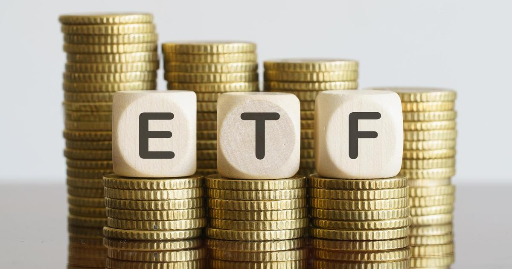

How to invest in gold ETFsWhere should you invest when inflation is high and the market is volatile? For many, the answer has long been in . "Gold, in general, is considered a hedge against currency risk, and headlines seem to be blaring that America's currency risk is taking some dire turns," says Thomas Maluck, a Certified Financial Education Instructor. But how do you go about investing in gold? If you aren't too keen on buying, storing, and securing the metal, below we'll take a look at how to invest in gold ETFs — and what gold investing experts have to say about them. Start exploring your gold options by requesting a free investors kit here. What is a gold ETF? A is a type of investment security that grants investors convenient electronic access to the gold market — removing the need to buy, hold or secure physical gold. The underlying assets of gold ETFs vary depending on the fund you choose, but asset management companies often buy and store gold bullion (of 99.5% purity) and aim to track the domestic physical gold price. Alternatively, some will buy stock in companies involved with the production of gold, such as gold-mining companies. In either case, gold ETFs can easily be traded like stocks on exchanges, and their value will rise or fall based on the performance of the underlying assets. Who benefits from investing in gold ETFs? Gold ETFs give investors a convenient way to access the gold market. "One of the chief benefits of investing in Gold ETFs has to do with the relative liquidity and portability of ETFs. If you build a position in gold through an ETF and decide a few months or years from now to close your position, you simply sell the shares and move on," says Maluck. "Meanwhile, with physical gold," he adds, "you have to find a seller, perhaps transport physical gold off of your property, likely pay a fee to a precious metals dealer, provide authentication for the purity of your gold, and so on." Beyond the convenience factor, gold ETFs are often considered safe-haven assets during times of geopolitical turmoil, economic uncertainty and . "Gold is a great investment for those looking to keep what they have and have their investments be a little more stable," says Patrick Di Cesare, a Certified Financial Education Instructor and the owner of Basic Financial Literacy. Learn more about your gold options with a free investment guide. What are gold ETF drawbacks? While gold ETFs can be convenient and hedge against inflation, they fall short when it comes to returns. Di Cesare says, "Those looking to grow their money should look to the overall stock market like the S&P 500. When comparing one Gold ETF, OUNZ and the S&P 500, the S&P 500 wins by 1.1% this year. When you zoom out five years, the S&P 500 wins by 5%." It's also important to understand the expense ratio to make sure you're not losing too much to fees. "Keep in mind that gold trust ETFs sell small amounts of their gold over time to cover expenses, which generates taxable events for you if the ETF is held in a taxable account," explains Maluck. He adds, "Precious metals are also taxed at a higher capital gains rate, including a long-term rate of 28%, much higher than that of stocks-based securities." How to invest in gold ETFs You can invest in gold ETFs in the same way you would buy other stocks and funds — by using an online brokerage, stockbrokers, robo-advisors, etc. However, all gold ETFs aren't going to offer the same returns. Be sure to consider factors such as the underlying assets, performance over the past five years, Net Asset Value, expense ratio, liquidity and tax implications. Most of this is available in each fund's prospectus or on the ETF's website of the SEC's EDGAR database. Other gold investing alternatives to know If a gold ETF isn't the right fit for you, here are a few gold investing alternatives to consider. - Physical gold: involves finding a trusted vendor, acquiring it, and storing it safely. - Gold futures: are contracts between buyers and sellers on centralized exchanges in which investors bet on at some point in the future. They can be less but do not have management fees. Further, the taxes are split between long-term and short-term capital gains. - Gold mutual funds: buy shares of companies in the gold mining industry. They can carry higher fees than ETFs and may require paying a commission to trade. - Gold IRAs: are tax-advantaged retirement accounts that allow you to invest in gold with an eligible custodian. Going this route, you'll be subject to IRA contribution limits and restrictions. Check your gold IRA options here now. Gold ETFs can be a convenient way to access the gold market but they're not without costs and risks. It can be highly beneficial to run your gold investing plans by a financial professional to ensure you fully understand the of your options. |
 |